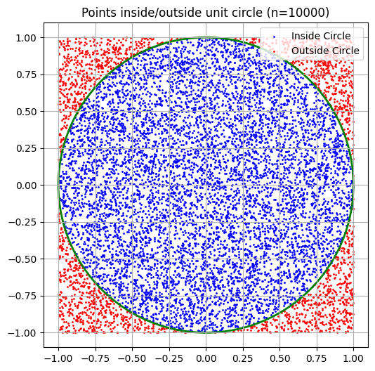
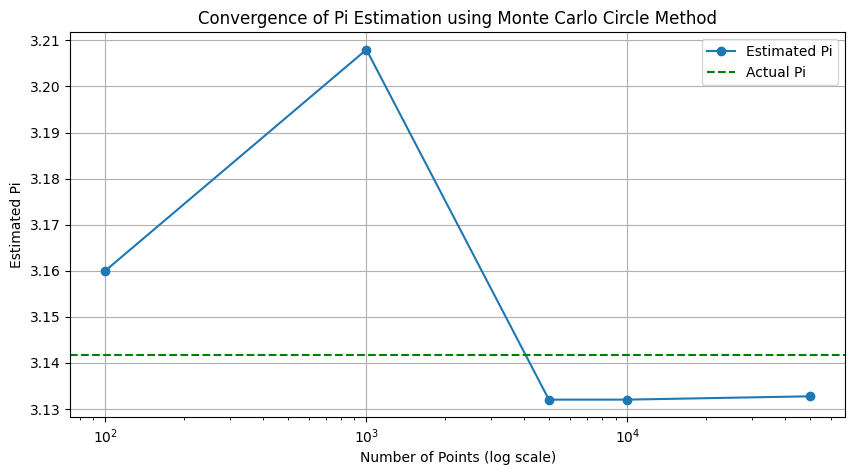
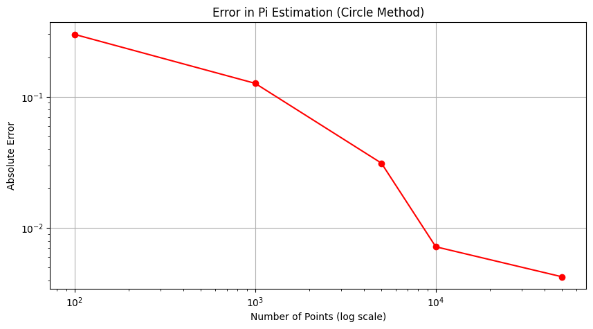
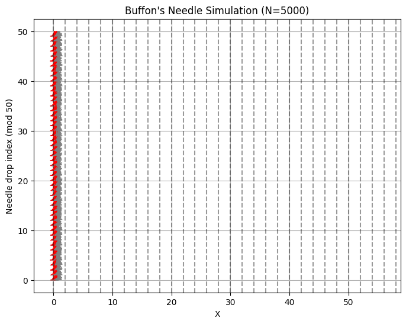
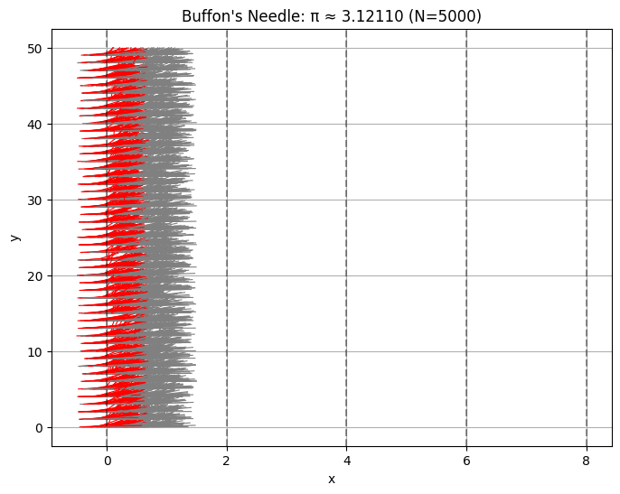
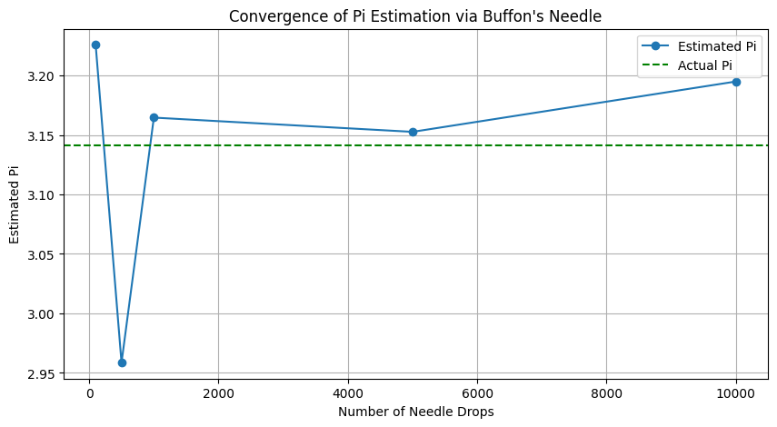

Problem 2: Estimating π Using Monte Carlo Methods
🎯 Motivation
Monte Carlo methods use random sampling to solve complex problems and estimate numerical values. One of their classic applications is estimating the value of π (pi) via geometric probability. In this assignment, you will explore two different Monte Carlo approaches to estimate π:
- Part 1: Using random points inside a square and an inscribed circle.
- Part 2: Using Buffon’s Needle experiment, a classic geometric probability problem.
These methods illustrate how randomness can yield elegant solutions to deterministic mathematical constants.
🟠 Part 1: Estimating π Using a Circle
1. Theoretical Background
Consider a unit circle (radius $ r = 1 $) inscribed inside a square with side length 2. The area of the square is:
The area of the circle is:
The probability $ P $ that a random point inside the square falls within the circle is the ratio of their areas:
Rearranging, π can be estimated as:
2. Simulation Algorithm
- Generate $ N $ random points \((x, y)\) uniformly distributed inside the square \([-1, 1] \times [-1, 1]\).
- For each point, check if it lies inside the circle using:
- Count how many points satisfy this condition.
- Calculate π estimate using the formula above.
3. Visualization
- Plot all points:
- Points inside the circle in blue.
- Points outside the circle in red.
- Draw the boundary of the unit circle.
- Display the estimated π value in the plot title.
4. Convergence Analysis
- Repeat the experiment for different $ N $ values, e.g., 100, 1,000, 10,000, 100,000.
- Plot estimated π values against $ N $ on a log scale.
- Plot the absolute error $ |\pi - \hat{\pi}| $ versus $ N $.
🧵 Part 2: Estimating π Using Buffon’s Needle
1. Theoretical Background
Buffon's Needle is a classical probability experiment:
- A needle of length $ L $ is dropped onto a floor with parallel lines spaced $ D $ units apart, where $ L \leq D $.
- The probability $ P $ that the needle crosses one of the lines is:
If we drop the needle $ N $ times and observe $ H $ hits (crossings), π can be estimated as:
2. Simulation Algorithm
- For each drop:
- Randomly generate the center position of the needle between two lines.
- Randomly generate the angle \( \theta \in [0, \pi] \) of the needle with respect to the parallel lines.
- Determine whether the needle crosses a line based on its position and angle.
- Count the number of hits \( H \).
- Calculate the π estimate.
3. Visualization
- Draw the parallel lines horizontally.
- Plot each needle:
- Needles crossing a line in red.
- Needles not crossing in gray.
- Show the estimated π value on the plot.
4. Convergence Analysis
- Run simulations for varying $ N $ (e.g., 100, 500, 1,000, 5,000, 10,000).
- Plot the estimated π versus $ N $.
- Analyze and discuss the variance and convergence speed compared to the circle method.
⚖️ Comparison and Discussion
| Method | Convergence Speed | Accuracy | Complexity | Visualization Clarity |
|---|---|---|---|---|
| Circle-based | Fast | High | Simple | High |
| Buffon’s Needle | Slower | Moderate | Moderate | Moderate |
- The circle method converges faster and is easier to implement and visualize.
- Buffon’s Needle is mathematically elegant and historically significant, but converges slower and has more variance.
✅ Deliverables
- Python code implementing both methods.
- Plots showing:
- Points and needles visualizations.
- Convergence graphs for different sample sizes.
- Comparative analysis and discussion of results.
📚 References
- Monte Carlo Method - Wikipedia
- Buffon’s Needle Problem - Wikipedia
- Allen B. Downey, Think Stats
Appendix: Python Code Examples
import numpy as np
import matplotlib.pyplot as plt
Part 1: Circle Method
import numpy as np
import matplotlib.pyplot as plt
def plot_points_circle(num_points):
x = np.random.uniform(-1, 1, num_points)
y = np.random.uniform(-1, 1, num_points)
inside = x**2 + y**2 <= 1
plt.figure(figsize=(6,6))
plt.scatter(x[inside], y[inside], color='blue', s=1, label='Inside Circle')
plt.scatter(x[~inside], y[~inside], color='red', s=1, label='Outside Circle')
circle = plt.Circle((0,0), 1, fill=False, color='green', linewidth=2)
plt.gca().add_artist(circle)
plt.gca().set_aspect('equal')
plt.title(f"Points inside/outside unit circle (n={num_points})")
plt.legend()
plt.grid(True)
plt.show()
# Kullanım:
plot_points_circle(10000)

def plot_pi_convergence_circle(sample_sizes):
estimates = []
for n in sample_sizes:
x = np.random.uniform(-1, 1, n)
y = np.random.uniform(-1, 1, n)
inside = x**2 + y**2 <= 1
pi_estimate = 4 * np.sum(inside) / n
estimates.append(pi_estimate)
plt.figure(figsize=(10,5))
plt.plot(sample_sizes, estimates, marker='o', linestyle='-', label='Estimated Pi')
plt.axhline(np.pi, color='green', linestyle='--', label='Actual Pi')
plt.xscale('log')
plt.xlabel('Number of Points (log scale)')
plt.ylabel('Estimated Pi')
plt.title('Convergence of Pi Estimation using Monte Carlo Circle Method')
plt.legend()
plt.grid(True)
plt.show()
# Kullanım:
sample_sizes = [100, 1000, 5000, 10000, 50000]
plot_pi_convergence_circle(sample_sizes)

def plot_pi_error_circle(sample_sizes):
errors = []
for n in sample_sizes:
x = np.random.uniform(-1, 1, n)
y = np.random.uniform(-1, 1, n)
inside = x**2 + y**2 <= 1
pi_estimate = 4 * np.sum(inside) / n
error = abs(np.pi - pi_estimate)
errors.append(error)
plt.figure(figsize=(10,5))
plt.plot(sample_sizes, errors, marker='o', color='red')
plt.xscale('log')
plt.yscale('log')
plt.xlabel('Number of Points (log scale)')
plt.ylabel('Absolute Error')
plt.title('Error in Pi Estimation (Circle Method)')
plt.grid(True)
plt.show()
# Kullanım:
plot_pi_error_circle(sample_sizes)

Part 2: Buffon's Needle
def plot_buffon_needle(N, L=1.0, D=2.0):
x_centers = np.random.uniform(0, D/2, N)
angles = np.random.uniform(0, np.pi/2, N)
crosses = x_centers <= (L/2) * np.sin(angles)
plt.figure(figsize=(8,6))
for i in range(N):
x = x_centers[i]
theta = angles[i]
x0 = x - (L/2)*np.cos(theta)
x1 = x + (L/2)*np.cos(theta)
y0 = i % 50
y1 = y0 + L * np.sin(theta)
color = 'red' if crosses[i] else 'gray'
plt.plot([x0, x1], [y0, y1], color=color, linewidth=0.8)
for line_pos in np.arange(0, 60, D):
plt.axvline(line_pos, color='black', linestyle='--', alpha=0.4)
plt.title(f"Buffon's Needle Simulation (N={N})")
plt.xlabel('X')
plt.ylabel('Needle drop index (mod 50)')
plt.grid(True)
plt.show()
# Kullanım:
plot_buffon_needle(5000)

def buffon_needle_simulation(N, L=1.0, D=2.0):
hits = 0
x_centers = np.random.uniform(0, D/2, N)
angles = np.random.uniform(0, np.pi/2, N)
for i in range(N):
if x_centers[i] <= (L / 2) * np.sin(angles[i]):
hits += 1
if hits == 0:
return None # Avoid division by zero
pi_estimate = (2 * L * N) / (D * hits)
# Visualization
plt.figure(figsize=(8, 6))
for i in range(N):
x = x_centers[i]
theta = angles[i]
x0 = x - (L/2) * np.cos(theta)
x1 = x + (L/2) * np.cos(theta)
y0 = i % 50
y1 = y0 + np.sin(theta) * L
color = 'red' if x <= (L / 2) * np.sin(theta) else 'gray'
plt.plot([x0, x1], [y0, y1], color=color, linewidth=0.8)
for line in np.arange(0, 10, D):
plt.axvline(line, color='black', linestyle='--', alpha=0.4)
plt.title(f"Buffon's Needle: π ≈ {pi_estimate:.5f} (N={N})")
plt.xlabel("x")
plt.ylabel("y")
plt.grid(True)
plt.show()
return pi_estimate
# Example Usage:
estimate_pi_circle(10000)
buffon_needle_simulation(5000)

def plot_pi_convergence_buffon(sample_sizes, L=1.0, D=2.0):
estimates = []
for N in sample_sizes:
x_centers = np.random.uniform(0, D/2, N)
angles = np.random.uniform(0, np.pi/2, N)
crosses = x_centers <= (L/2) * np.sin(angles)
hits = np.sum(crosses)
if hits == 0:
pi_estimate = np.nan
else:
pi_estimate = (2 * L * N) / (D * hits)
estimates.append(pi_estimate)
plt.figure(figsize=(10,5))
plt.plot(sample_sizes, estimates, marker='o', linestyle='-', label='Estimated Pi')
plt.axhline(np.pi, color='green', linestyle='--', label='Actual Pi')
plt.xlabel('Number of Needle Drops')
plt.ylabel('Estimated Pi')
plt.title("Convergence of Pi Estimation via Buffon's Needle")
plt.legend()
plt.grid(True)
plt.show()
# Kullanım:
sample_sizes_needle = [100, 500, 1000, 5000, 10000]
plot_pi_convergence_buffon(sample_sizes_needle)
